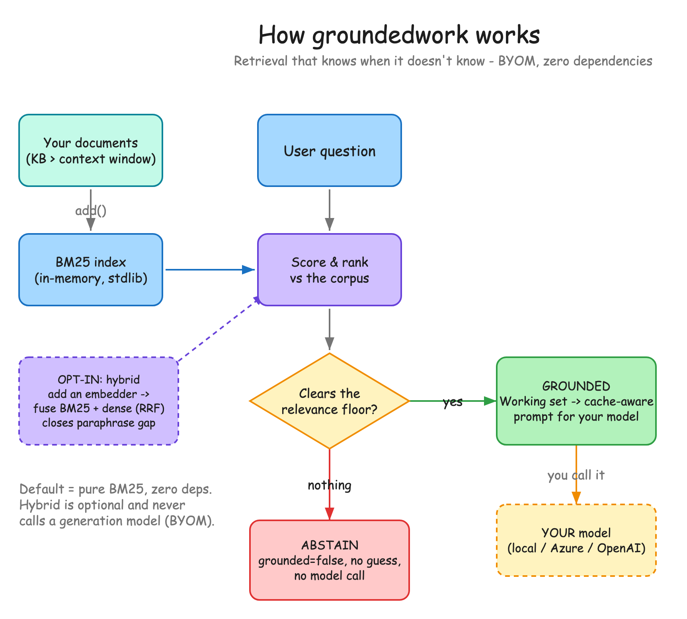

A tiny, dependency-free layer that gives an LLM a knowledge base bigger than its context window, and says "I don't have that" instead of making something up. Try it in your browser, no install.
Most retrieval failures don't look like failures. The model returns a confident, fluent paragraph. It's just wrong, because nothing in the knowledge base actually answered the question, and the model filled the gap rather than admit it. In a healthcare or finance demo that confident-wrong answer is the whole risk, and it's the one thing a vector database won't save you from.
Passing an entire knowledge base into a language model is a brute force solution. While context windows are expanding to millions of tokens, the operational reality of filling them remains punishing. Processing a massive prefix for every query degrades reasoning quality, increases time to first token, and accumulates substantial cost. Developers need a way to give models access to large document corpora without moving the entire corpus across the network on every turn. The standard alternative, a vector database, adds external services, sync logic, embedding calculation on every update, and deployment topology. And it still fails on the case that matters: ask something outside the index and it returns the closest documents anyway, feeding the model distractors and guaranteeing a confident, hallucinated answer.
A dependency-free retrieval layer in Python and TypeScript. It pulls only the documents that answer a question into the prompt, and when nothing clears a relevance floor it returns ungrounded so the model abstains instead of hallucinating. 99.2% fewer tokens per query, no vector DB, bring your own model. Try the live demo or read the code.
groundedwork is a tiny, dependency-free retrieval layer in Python and TypeScript. It sits between your application and your model as a strict relevance filter: a knowledge base much larger than the context window, with hallucinations prevented by abstention. It is not a framework, not a vector database, and it never calls a model. You bring your own, local, Azure, or OpenAI. It handles only retrieval, scoring, and prompt assembly. It is part of the same family as workingset and ContextForge, and it is the smallest version of the pattern.

At the core is an in-memory BM25 keyword index. A query is scored against the corpus, the top candidates are taken, and a relevance floor is applied. If the best match falls below it, the tool returns an empty set and flags the request as ungrounded. Ask "capital of France" against a coffee-shop knowledge base and BM25 finds no overlap, so instead of returning the coffee menu as context, groundedwork returns an ungrounded state and your app replies that it doesn't have the information. No model call is made. Starve the model of distractors and out-of-domain hallucinations stop.
from groundedwork import GroundedWork
kb = GroundedWork().add_many(docs)
r = kb.retrieve("how do I get a refund")
if r.grounded:
answer = your_model(r.messages) # you bring the model
else:
answer = "I don't have that in my knowledge base."When a query clears the floor, groundedwork assembles a cache-aware prompt, stable system text first and volatile knowledge last, so prefix caching stays warm. Measured across 390 queries on a 392-document corpus with the GPT-4o/5 tokenizer, the working set holds 179 tokens against 23,493 for the whole corpus: 99.2% fewer input tokens per query.
Keyword indexing is fast but struggles with pure vocabulary mismatch. "How do I get my money back" against a doc titled "Refund Policy" shares no terms. Optional hybrid mode injects your own embedder and fuses keyword scores with dense scores via reciprocal rank fusion. It doubles paraphrase recall from 1/4 to 2/4, with zero regression on the 390 exact-match cases. Semantic flexibility, no loss of exact-match precision, and still no generation model called.
The Python and TypeScript implementations are verified byte-identical to nine decimal places on a shared fixture. So the demo in your browser is not a mockup, it is the real engine, scoring real documents and deciding to answer or abstain in front of you. MIT, dependency-free, available today.
The "working set" framing comes from the same family as ContextForge and workingset, whose benchmark write-up is worth reading alongside this. groundedwork is the smallest possible version: keyword retrieval, a floor, and an honest abstain. The contribution isn't novelty, it's restraint, and a guarantee that's actually tested.
If this was useful and you want to support more writing like it, you can sponsor my work on GitHub. 100% goes to me, no platform fees.